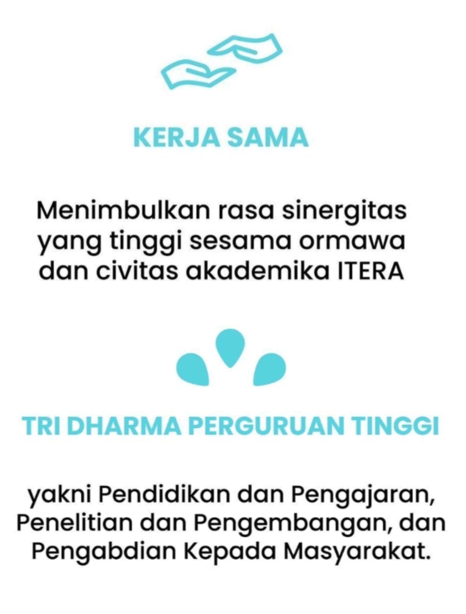
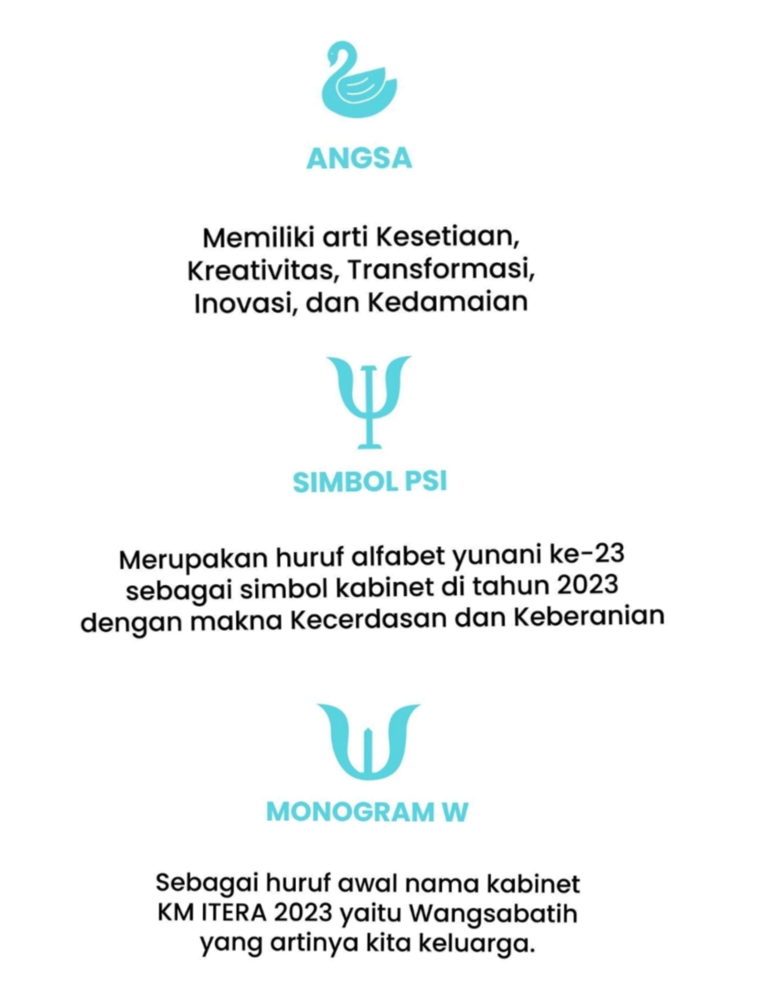

KM-ITERAKM-ITERA (Keluarga Mahasiswa Institut Teknologi Sumatera) merupakan organisasi kemahasiswaan intra perguruan tinggi yang diselenggarakan berdasarkan prinsip dari, oleh dan untuk mahasiswa demi menciptakan kader-kader bangsa yang berpotensi melanjutkan kesinambungan pembangunan nasional. |
|
Awal Mula KM ITERAOrganisasi kemahasiswaan tertinggi di ITERA diwadahi dalam Keluarga Mahasiswa (KM) ITERA. Pada tanggal 16 Mei 2015 Badan Pendiri Keluarga Mahasiswa (BPKM) Itera telah menyelenggarakan forum mahasiswa yang menghasilkan pengesahan Anggaran Dasar dan Anggaran Rumah Tangga (AD/ART) Keluarga Mahasiswa (KM) Itera. KM Itera terdiri dari himpunan mahasiswa dan unit kegiatan mahasiswa. |
|  |  |